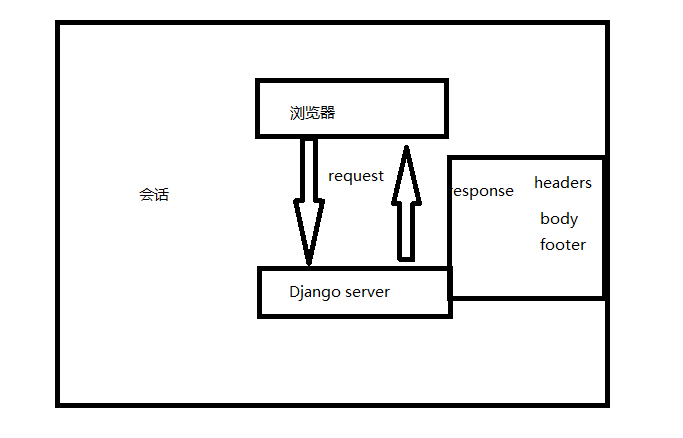

- 什么是表单:
- 表单是HTML中用于提交数据给服务器的一个标签,所有的表单元素(input/textarea/button...)都要放在form标签当中.然后有以下参数:
- `form`的`method`参数用于设置表单的提交方式,默认使用`POST`.
- `action`用于设置表单的提交url,如果不写或者保持空字符串,那么将使用当前的URL.
- 你的action尽量指定一个url，因为这块会有浏览器兼容问题，有的浏览器填空是不能获取到对应的action
- 一个会话的流程

- GET和POST:
- `GET`:GET如其名，是从服务器获取数据，不会更改服务器的状态和数据，在URL中携带参数发送给服务器。
- POST则是将一定量的数据发送给服务器，一般会更改服务器的数据。
- POST方法的参数不能在URL当中看到,他是通过body参数传递给服务器的,所以相对GET方法直接能在URL当中看到传递的参数,显得更加安全一些.当然,也不能简单的判定POST方法比GET方法更安全,要使网站保持安全,需要做更多的安全处理.
- HttpRequest:
- request.scheme：网络请求的协议，一般是http和https
- request.body：http请求中传递的原始数据，是一个byte类型的string，如果要处理form表单上传上来的数据，应该使用request.POST，这个处理得比较好。
- request.path：当前请求的URL路径，但是不包括scheme和域名，比如有http://www.myblog.com/blog/1。那么返回的将是/blog/1。会去除掉http和www.myblog.com
- request.method：当前这个请求访问方法，一般为GET和POST，例如可以通过以下方式进行判断：
- request.GET：一个QueryDict的类字典类型的对象，可以通过访问字典的方式进行访问里面的值，里面的值是通过GET请求传递进来的参数。
- request.POST：同request.GET，但是是保存了通过POST请求传递上来的参数。注意，这个POST里面不包含上传的文件信息。
- request.FILES : 如果要访问上传的文件，请使用request.FILES。
- request.COOKIES：一个字典类型，包含了所有的cookie信息，key和value都是字符串。
- request.META：存储所有请求的头部信息。
- request.session：返回一个QueryDict的类字典类型的集合，这个属性要有效，必须添加SessionMiddleware这个中间件。
- request.is_secure()：如果是HTTPS的，那么返回True，否则返回False
- request.is_ajax()：这个请求是否是通过XMLHttpRequest进行访问的。
- 他的实现原理就是去request.META中查找HTTP_X_REQUESTED_WITH，如果是XMLHttpRequest，那么将返回True，否则返回False。**一般在第三方库如jQuery中使用ajax方法都设置了这个值，如果自己手动写XMLHttpRequest，那么需要自己添加这个header，is_ajax这个方法才能生效。
- HttpResponse对象:
- HttpResponse.__init__(content=’’,content_type=None,status=200,reason=None,charset=None)构造方法：
- content：代表要发送给客户端的内容。
- content_type：代表发送给客户端的内容类型，默认是“text/html;charset=utf-8”。
- charset：响应体的编码，如果没有指定，则会使用content_type中设置的charset。
- set_cookie(key,value=’’,max_age=None,expires=None,path=’/’,domain=None,secure=None,httponly=False)
- delete_cookie(key,path=’/’,domain=None)：删除cookie。
- response子类
- BadHeaderError
- FileResponse
- Http404
- HttpResponse
- HttpResponseBadRequest
- HttpResponseForbidden
- HttpResponseGone,
- HttpResponseNotAllowed
- HttpResponseNotFound
- HttpResponseNotModified,
- HttpResponsePermanentRedirect
- HttpResponseRedirect,
- HttpResponseServerError
- JsonResponse
- StreamingHttpResponse
- cookie
- 在程序中，会话跟踪是很重要的事情。理论上，一个用户的所有请求操作都应该属于同一个会话，而另一个用户的所有请求操作则应该属于另一个会话，二者不能混淆。例如，用户A在超市购买的任何商品都应该放在A的购物车内，不论是用户A什么时间购买的，这都是属于同一个会话的，不能放入用户B或用户C的购物车内，这不属于同一个会话。
- 而Web应用程序是使用HTTP协议传输数据的。HTTP协议是无状态的协议。一旦数据交换完毕，客户端与服务器端的连接就会关闭，再次交换数据需要建立新的连接。这就意味着服务器无法从连接上跟踪会话。即用户A购买了一件商品放入购物车内，当再次购买商品时服务器已经无法判断该购买行为是属于用户A的会话还是用户B的会话了。要跟踪该会话，必须引入一种机制。
- Cookie就是这样的一种机制。它可以弥补HTTP协议无状态的不足。在Session出现之前，基本上所有的网站都采用Cookie来跟踪会话。
- session
- Session是另一种记录客户状态的机制，不同的是Cookie保存在客户端浏览器中，而Session保存在服务器上。客户端浏览器访问服务器的时候，服务器把客户端信息以某种形式记录在服务器上。这就是Session。客户端浏览器再次访问时只需要从该Session中查找该客户的状态就可以了。
- 如果说Cookie机制是通过检查客户身上的“通行证”来确定客户身份的话，那么Session机制就是通过检查服务器上的“客户明细表”来确认客户身份。Session相当于程序在服务器上建立的一份客户档案，客户来访的时候只需要查询客户档案表就可以了。
- 使用session与cookie完成登录页面
- 通过request.POST获取数据
- 通过session+cookie保存登录状态
- crsf_token: 防跨域html标签
作业：完成博客页面的登录